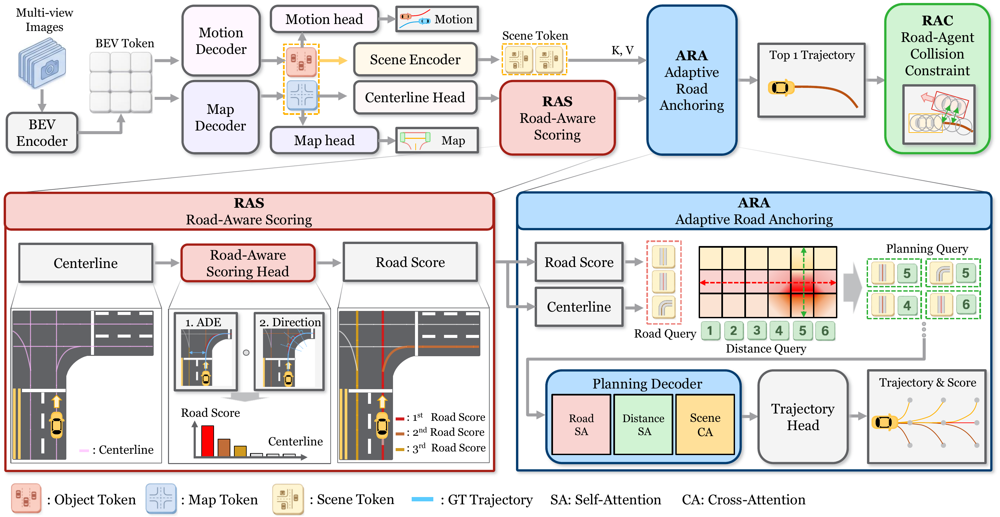

RoadAnchOR: Road-Adaptive Query Anchoring for End-to-End Autonomous Driving
Abstract
End-to-end autonomous driving models increasingly rely on query-based frameworks for trajectory generation. However, existing methods face a critical limitation: planning queries are often initialized without explicit geometric priors or depend on rigid, static anchors that fail to adapt to diverse environments. In this paper, we propose RoadAnchOR, a novel road-adaptive planning framework designed to overcome this bottleneck. We introduce Road-Aware Scoring (RAS) to score the planning relevance of online-predicted road geometry and provide an explicit geometric prior. Adaptive Road Anchoring (ARA) uses this prior to initialize planning queries. This mechanism dynamically aligns initial queries with feasible driving paths, ensuring that the trajectory generation process is inherently grounded in the current road structure. We further introduce a collision avoidance constraint based on agent geometry to encourage safer trajectories generated from road geometry. Experiments on Bench2Drive show that RoadAnchOR achieves competitive closed-loop performance compared with state-of-the-art methods, offering a novel planning framework through adaptive query anchoring.
Architecture

Figure 2. Overview of the RoadAnchOR architecture. (Top) BEV features from multi-view images feed motion and map decoding branches, supplying scene tokens and predicted centerlines. (Bottom left) Road-Aware Scoring (RAS) assigns road scores to online-predicted centerlines according to their planning relevance. (Bottom right) Adaptive Road Anchoring (ARA) uses the scored road geometry as a prior for road-adaptive query anchoring. Road and distance queries are combined to initialize planning queries, which the planning decoder refines through road and distance self-attention and cross-attention to scene tokens. The trajectory head then outputs trajectories and scores. At the upper right, Road-Agent Collision Constraint (RAC) applies a collision avoidance loss based on agent geometry to the output trajectories.
View Figure 2 at full resolution ↗Qualitative Results
RoadAnchOR driving videos, organized by scenario.
Qualitative videos will be added here.